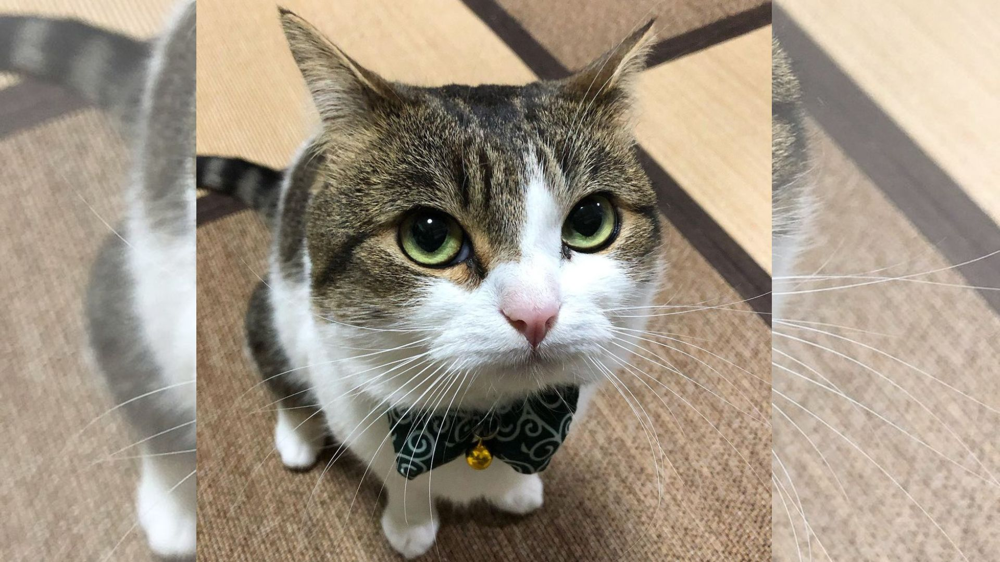

¿Qué es el VIH?
El VIH es un virus que afecta al sistema inmunitario. Con información adecuada es posible conocer cómo prevenirlo y cómo acceder a servicios de salud.
Un espacio creado para jóvenes y adolescentes donde puedes aprender sobre el VIH de una manera clara, educativa y cercana.
Entender qué es el VIH es uno de los primeros pasos para tomar decisiones informadas.
El VIH es un virus que afecta al sistema inmunitario. Con información adecuada es posible conocer cómo prevenirlo y cómo acceder a servicios de salud.
Conocer las principales vías de transmisión permite identificar medidas de prevención y evitar información incorrecta.

El VIH no se transmite por compartir espacios cotidianos, abrazar, saludar o convivir con una persona que vive con VIH.
Informarte también es una forma de cuidarte.
Busca información confiable y evita compartir mitos o contenidos que puedan generar confusión.
Existen diferentes estrategias de prevención. Conocerlas permite tomar decisiones informadas.
Ante dudas relacionadas con el VIH, puedes acudir a servicios de salud y recibir orientación profesional.
No todo lo que circula en Internet es cierto. Aprende a diferenciar información confiable de los mitos.
| MITO | REALIDAD |
|---|---|
| El VIH se transmite por abrazar. | El contacto cotidiano como abrazar no transmite el VIH. |
| Una persona con VIH siempre parece enferma. | No es posible saber si una persona tiene VIH por su apariencia. |
| Compartir espacios transmite VIH. | Convivir y compartir espacios cotidianos no transmite el VIH. |
Descubre información que quizá no conocías.
Aprender sobre salud sexual y prevención ayuda a tomar decisiones responsables.
Antes de compartir información sobre VIH, comprueba que provenga de una fuente confiable.
La información correcta ayuda a combatir prejuicios y discriminación.
Pon a prueba lo que aprendiste mediante actividades educativas diseñadas para jóvenes.
Completa conceptos relacionados con la información aprendida.
Relaciona conceptos y descubre nuevos conocimientos.
Encuentra palabras relacionadas con prevención y salud.
Si necesitas orientación, información o atención, existen instituciones y organizaciones que pueden brindarte apoyo.
Puedes acudir a establecimientos de salud para recibir orientación y atención.
Las organizaciones y plataformas juveniles pueden brindar información y orientación sobre derechos y prevención.
Consulta siempre fuentes oficiales y organizaciones especializadas.
Esta plataforma debe utilizar información respaldada por instituciones y organizaciones especializadas.
Información internacional sobre salud, VIH y prevención.
Información y recursos oficiales relacionados con salud en Bolivia.
Recursos y experiencias desarrolladas desde espacios de participación juvenil.
La información es una herramienta para tomar decisiones responsables y construir espacios más libres de estigma y discriminación.
Volver al inicio ↑